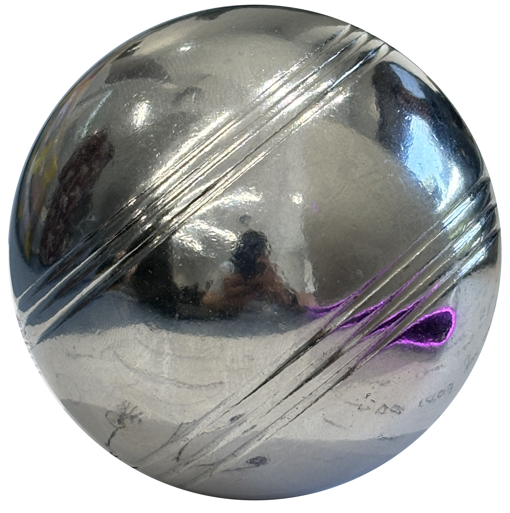
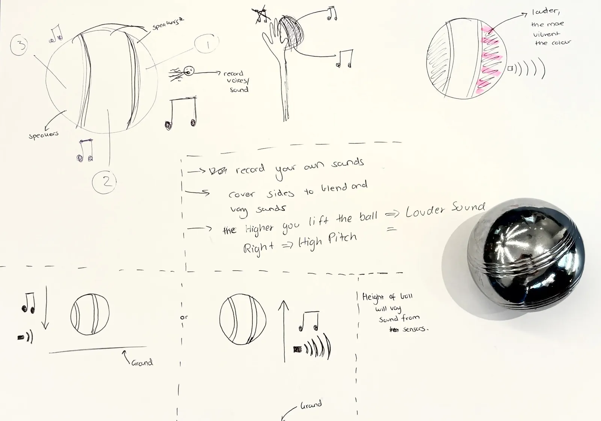

back
This object is the orb: The outcome of week 1's Human gesture conceptualisation. This object is transformed into an interface through how the viewer speaks and interacts with it's surface. From our group, our main concept was that the surface is a speaker, which plays back sound depending on the direction the sound originates from. Addtionally, the sound is impacted by the placement & treatment of the orb - If the orb is moving, the volume increases based on its speed, if the orb is covered at any point, audio does not play from that part of the surface.
Overall, touch sensitive audio in interaction seems pretty interesting in engaging users to look at how they treat 'inanimate' objects when they respond back to input.
